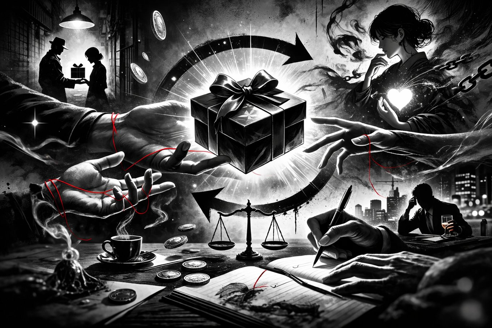

なぜあなたの「ギブ」は1円にもならないのか？

どーも、とーるです‼
最近、近所の家電量販店に行った時の話なんですが、ある最新ガジェットのPOPが目に入ったんですが、そこには
「業界初！〇〇機能搭載！」「〇〇比150%UP！」「今なら期間限定キャンペーン実施中！」
と、情報の暴力のような文字が躍っていました。
僕はどうしたか。……1秒で視線を逸らしました。
価値がないと思ったわけじゃありません。
読むのが「面倒」だったんです。
実は、今のSNS集客の失敗の9割はこれと同じです。
多くの人が、海外の有名マーケターが提唱する「価値提供→即購入」のメソッドを盲信しています。
ですが、そこには日本のSNS文化が持つ「社会規範」と、ユーザーの脳が支払う「認知税」という壁が立ちはだかっています。
人が読む前に離脱する、見えないコスト
まず理解すべきは「認知税」という概念。
これは、情報の「注意・判断・理解」に消費される脳のリソース（コスト）のこと。
SNSを開いている時、ユーザーの脳は「節約モード（娯楽・暇つぶし）」です。
そこに、
- 専門用語だらけの長文
- 抽象的なカタカナ語の乱用
- 10枚ギチギチに文字が詰まった画像
- 「プロフを見て！」「公式LINEへ！」という過剰な指示（CTA）
これらが並んだ瞬間、ユーザーの脳内では「認知税、高すぎ！」というアラートが鳴ります。
価値が伝わらない以前に、「価値を理解するためのコストが高すぎて、読む気にならない」んです。
SNS集客の敗北は、内容の優劣ではなく「読む前のスルー」で決まっています。
SNSは「市場」ではなく「社会」の場である
なぜ、認知税を高くしてしまうのか。
それは、SNSを「市場規範（マーケット・ノーム）」の場だと勘違いしているからです。
行動経済学者ダン・アリエリーは、世界には2つの規範があると提唱しました。
- 市場規範：損得、コスパ、契約、合理的な判断。（例：Amazonでの買い物）
- 社会規範：感情、つながり、友情、お返し。（例：友達のホームパーティー）
これは僕のコラムでちょいちょい出てくる内容なので、もうすでにご存じの方もいると思います。それくらい"大事な概念"ってことです。
そして、SNSの本質は、圧倒的に「社会規範」の場。
ユーザーは友達の近況を見たり、面白い動画で笑ったりするためにそこにいます。
そこにいきなり「私は月商〇〇万のプロです！ 詳細はこの説明書（プロフィール）を読んで！」と市場規範を持ち込むのは、友達のパーティーにスーツで現れ、名刺を配り歩く不審者と同じ。
詳しすぎるプロフィールや営業感の強さは、社会規範を破壊し、生理的な拒否反応を生みます。
海外に存在する「第三の規範」
ここで、今回の本題です。
なぜ海外（特に米国）のSNSマーケティングでは、無料発信だけでドカドカ売れたり、応援購入が起きたりするのか。
それは彼らの文化に「贈与規範」という土壌があるからです。
贈与規範とは、ビジネス（市場）でも友情（社会）でもない、「良いことをしてもらったら、お金を払うのが道徳的である」という道徳的返報の文化。
チップ文化がその最たる例ですね。
【事例：日本の山を登る女性ティックトッカー】
ある日本人女性が、英語を喋りながら日本の山を登山するライブ配信をTikTokでしていました。
彼女は何かを売っているわけではありません。ただ景色を見せて喋っているだけ。
しかし、海外の視聴者からは次々と「チップ（投げ銭）」が飛んできます。
あちらの文化では、これが「道徳の範疇」として極々自然なことなんです。
「素晴らしい景色を見せてくれた、時間を共有してくれた。だからその対価を払うのは当然のマナーだ」というスイッチが、呼吸をするように入ります。
しかし、日本で同じことをしたらどうでしょう？
たとえ投げ銭があったとしても、それは「あの人すげーな、投げ銭したわ」という"特別なイベント"としての感覚が強い。
「道徳として当たり前に払う」という贈与規範は、残念ながら日本にはほとんど存在しません。
日本で「海外流のギブ」が機能しない理由
日本にはこの「贈与規範」がないため、海外式の「ギブしまくれ」をそのままやると、悲惨な結末が待っています。
「ありがとう」で終わる：日本では、無料の有益情報は「ラッキーなもらい物」として消費されます。贈与規範がないため、「お金を払って報いる」という発想には繋がらず、ただ「無料で奪う層」が集まるだけになります。
「応援購入」が起きにくい：チップの文化がないため、「とりあえず買って応援する」という行動が極めて起きにくい。価値提供だけでは売れないのです。
自己主張への強い拒否反応：日本人は「社会規範」への感度が異常に高いため、少しでも営業感や自己主張が強すぎると、生理的なシャッターを降ろしてしまいます。
海外流の「有益発信→即購入」という導線は、この贈与規範という強力なエンジンがあって初めて成立するものなんです。
日本で機能するSNS戦略は「認知設計 × 興味の余白」
では、日本ではどう立ち回るのが正解なのか。
それは、「認知税の引き下げ」と「興味の余白」です。
認知税を極限まで下げる：「負担の少なさ」こそが最大の正義です。
プロフィールは「説明書」ではなく「看板」にする。
ざっくりとしたカテゴリー ＋ あなたの価値観 だけを10秒で伝わるように設計する。詳細はハイライトに逃がし、ユーザーの脳を疲れさせないことです。
社会規範に擬態する：「情報の場」ではなく「関係性の場」として振る舞う。
一方的な価値提供（市場規範）ではなく、コミュニケーション（社会規範）を優先し、まずは「怪しくない、親近感の持てる人」というポジションを確立します。
興味の余白を残す：すべてをSNS上で説明しきらない。
海外のような「応援購入」が期待できない以上、日本で必要なのは、「もっと知りたい」という欠乏感（余白）を作ることです。
プロフィールはあえて短くし、詳細はハイライトやリンク先に置く。この「自発的な一歩」を促す設計が、日本人の性質にはマッチします。
文化に合わせた「認知設計」がすべて
SNS集客の失敗は、能力不足でも努力不足でもありません。
単に、海外という「別のゲーム」のルールを、日本という「このゲーム」に持ち込んでいただけです。
「ギブをしまくれば、道徳的な返報で売れるはずだ」という希望的観測を捨てましょう。
必要なのは、スピリチュアルな運勢に頼ることではなく、
① 認知税を最小限まで下げて離脱を防ぐ。
② 社会規範に沿った振る舞いで拒否反応を消す。
③ 興味の余白を残して、自発的な行動を促す。
この3点に集中することです。
SNSは情報の戦場ではなく、人間と人間の「出会いの入口」です。
日本という土地の規範を理解し、相手の脳に優しい「認知設計」を施す。
その思考や戦略こそが、結果としてあなたをSNS迷子から救い出す唯一の道となります。
なんてね
とーる｜行動経済アナリスト